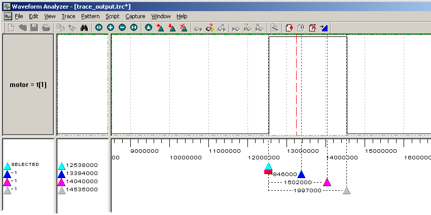

The handout for Laboratory V introduced the DK Waveform Analyzer, but it omitted the step of actually using the Waveform Analyzer to trace the output of your servomotor controller, having you verify your circuit only using an oscilloscope instead. This supplement shows you how you can set up your Handel-C code so you can test your motor controller using the Waveform Analyzer during simulation if you want to.
You need to configure the project for both Simulation (Debug) and EDIF (RC200E) in the usual way. This document assumes you define the preprocessor symbols USE_SIM and either USE_RC200 or USE_RC200E for compatibility with the PAL.
You need to make several changes to your source code to accommodate the differences between simulation and EDIF configurations: Clock specification, PAL switch numbers, and the output interface.
You can use any one of the three RC200E hardware clocks as the PAL_TARGET_CLOCK_RATE rate when generating EDIF, but you can save run time by specifying a slower value when simulating. However, because of the microsecond_delay() macro proc, the slowest value you can use meaningfully is 1MHz so that the expression PAL_ACTUAL_CLOCK_RATE / 1000000 doesn't go to zero.
An issue when simulating for use with the Waveform Analyzer is that the (simulated) clock must be output to the Analyzer so it can synchronize with the Handel-C program as the simulation runs. As seen in the example from the Waveform Analyzer Manual, the simulator and Analyzer clocks can be synchronized by including a set clock statement in the Handel-C program, and by adding tags to the statement using a with block. (See page 209 of the Handel-C Reference Manual for a discussion of where with blocks are used.) But you can't have both a set clock statement and a definition of PAL_TARGET_CLOCK_RATE in effect when you #include pal_master.hch. The trick here is to specify the PAL_ACTUAL_CLOCK_RATE when simulating.
The reason for including pal_master.hch is so we can use the simulated switches of the PAL Virtual Console while testing the program, which leads back to an issue discussed earlier this semester: The RC200E switches are numbers 0 and 1, but the PAL Virtual Console's switches number 8 and 9 are more appropriate for the way we are using the buttons. All together, we end up with initial code that looks something like this:
#if (defined USE_RC200 || USE_RC200E)
#define PAL_TARGET_CLOCK_RATE 50000000
#define SW0 0
#define SW1 1
#define NUM_SWITCHES 2
#else
#define PAL_ACTUAL_CLOCK_RATE 1000000
set clock = external "P1"
with
{
extlib = "DKSync.dll",
extinst = "1000", // Period of 1MHz simulated clock
extfunc = "DKSyncGetSet"
};
#define SW0 8
#define SW1 9
#define NUM_SWITCHES 10
#endif
#include
The output of the program is to be connected to pin 3 of the expansion header when generating EDIF, but has to be connected to a "terminal" in order to monitor it with the Waveform Analyzer. The following conditional code takes care of that:
unsigned 1 motor_pin = 0;
interface bus_out() motor( unsigned 1 out = motor_pin )
with
{
#if (defined USE_RC200 || USE_RC200E)
data = { "M2" }
#else
extlib = "DKConnect.dll",
extinst = "t(1)",
extfunc = "DKConnectGetSet"
#endif
};
The trick here is to get the Waveform Analyzer to give you meaningful time intervals. Since the Handel-C simulation is using a 1MHz clock, specify 1000 for the Waveform Analyzer's clock period, the same value used for the extinst parameter of the set clock's with block. The number is specified in nanoseconds, as mentioned on page 6 of the Waveform Analyzer Manual. You can take as many samples with the Waveform Analyzer as you wish. If you collect 20,000, your trace will show 20,000 * 1,000 nanoseconds of simulated time (20,000,000 nsec = 20 msec, the interval between pulses that your code is to generate). If you collect 40,000 samples, you should see two pulses at a time in the Waveform Analyzer's trace window; collect 10,000, and you will see one pulse on every other sweep (by the dashed red line) of the trace window. If you make the number of samples a multiple of 20,000, the pulses you see will appear to be stationary in the trace window, but if you make the number of samples not be a multiple, the pulses will move around in the trace window on successive sweeps, making it hard to validate that your code is working correctly.
With everything set up correctly, you should be able to start your simulation in the usual way from the DK GUI, and you should be able to operate switches 8 and 9 in the PAL console. At any time, you can start the Waveform Analyzer, and it will display the motor output as the simulated value changes. You can use Waveform Analyzer cursors to mark the beginning and ends of the pulses to verify that they are of the correct width as you operate the virtual switches.
The following screen shot shows the Waveform Analyzer with cursors set to the beginning of the pulses and lined up with where the pulses ended when different combinations of input switches were on. I've zoomed in on the pulse so there is enough room to read the time intervals between the cursors. Note that these intervals are not perfectly accurate because the screen resolution prevents placing the cursors in perfect alignment with the edges of the pulses.
